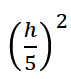

Kirjoita alla olevat tekstit ja MathML-kaavat itse uudelleen.
Jos tarvitset apua kirjoittamisessa tai haluat tarkistaa oman koodin, niin käytä selaimen "Tarkista" tai "Tarkastele"-tilaa esimerkiksi oikealla hiiren klikkauksella ja tarkista sivuston koodi sieltä.
Tunnista ja korjaa virhe:
Oikea lauseke: 
Selvitä MathML Core -sivuilta, miten seuraava merkintä tehdään: Etsi hakusanalla "linethickness". MathML-koodiin on lisätty ylimääräiset
Vihje
mrow-elementit, jotta se näyttää oikealta myös Firefox-selaimessa.